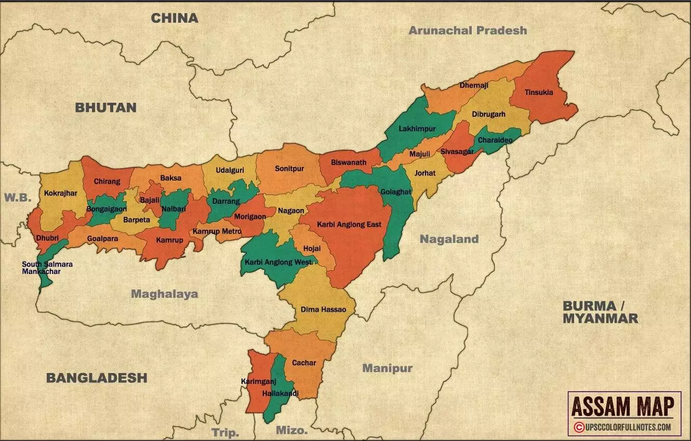
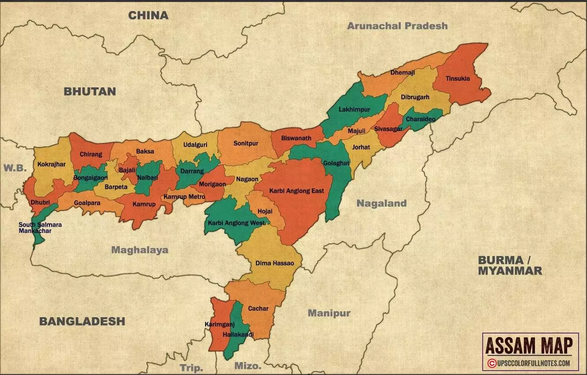

Assam, a state in northeastern India, is situated in the heart of the region and is known for its lush green
landscapes, rolling hills, and extensive river systems. It is located between latitudes 24°N and 28°N and
longitudes 89°E and 96°E, making it a vital link between mainland India and the northeastern states.
1. Borders and Boundaries:
- Assam shares its borders with several Indian states and countries. To the north, it is bordered by Bhutan and the Indian state of Arunachal Pradesh. The eastern boundary touches Nagaland and Manipur, while the southern side is flanked by Mizoram and Tripura. To the west, Assam shares its boundary with West Bengal, Meghalaya, and the neighboring country of Bangladesh.
- Assam's proximity to international borders gives it significant geopolitical importance, particularly in its interactions with Bhutan and Bangladesh. The state's strategic location makes it a gateway to Southeast Asia.
2. Topography:
- The state of Assam is predominantly a plain, with the Brahmaputra Valley dominating its landscape. The fertile Brahmaputra Valley, formed by the Brahmaputra River and its tributaries, is the most important geographic feature of Assam. The valley is surrounded by hills and plateaus, making Assam a mixture of plains and highlands.
- To the south of Assam lies the Barak Valley, which is another important region. The Barak River flows through this valley, enriching the soil and supporting agriculture, much like the Brahmaputra Valley.
- The Northern Hills: Assam's northern side is framed by the Eastern Himalayas and the Patkai range, creating a natural border with Arunachal Pradesh and Bhutan.
- Hills of Southern Assam: The Karbi Anglong and Dima Hasao (North Cachar) districts are hilly regions that are sparsely populated and rich in biodiversity.
3. The Brahmaputra River:
- The Brahmaputra River is the lifeline of Assam, running across the state from east to west. Originating in Tibet as the Yarlung Tsangpo and passing through Arunachal Pradesh, it enters Assam and becomes the mighty Brahmaputra. The river splits the state into two major regions, Upper Assam and Lower Assam, which are distinct culturally and geographically.
- The Brahmaputra is one of the few major rivers in the world that carries both a male and a female name. Its vast network of tributaries, including rivers like the Manas, Dibang, Subansiri, and Teesta, contribute to the extensive water resources of the state.
.jpeg) 

4. Climate:
- Assam enjoys a subtropical monsoon climate, with heavy rainfall during the monsoon season. The presence of the Brahmaputra and its tributaries, along with the surrounding hills, ensures a lush, green environment.
- Summers are warm, with average temperatures ranging between 26°C to 32°C, while winters are mild and pleasant, with temperatures ranging between 10°C to 25°C. The region receives heavy rainfall, especially during the monsoon months from June to September, contributing to the state's rich agricultural output, particularly rice and tea cultivation.
5. Natural Resources and Flora and Fauna:
- - Assam is blessed with an abundance of natural resources, including vast tea gardens, oil, and natural gas reserves, especially in the Upper Assam region. The state is also known for its dense forests, which are rich in biodiversity.
- - The Kaziranga National Park, home to the endangered one-horned rhinoceros, and the Manas National Park, a UNESCO World Heritage Site, are located in Assam, highlighting its ecological significance.
Conclusion:
Geographically, Assam is a state of contrasts, with its fertile valleys, flowing rivers, lush forests,
and hilly regions contributing to its diverse landscape. The Brahmaputra River is the state's defining
feature, shaping its culture, economy, and natural beauty. The state’s central location in Northeast
India makes it a crucial geographical, economic, and cultural hub in the region.